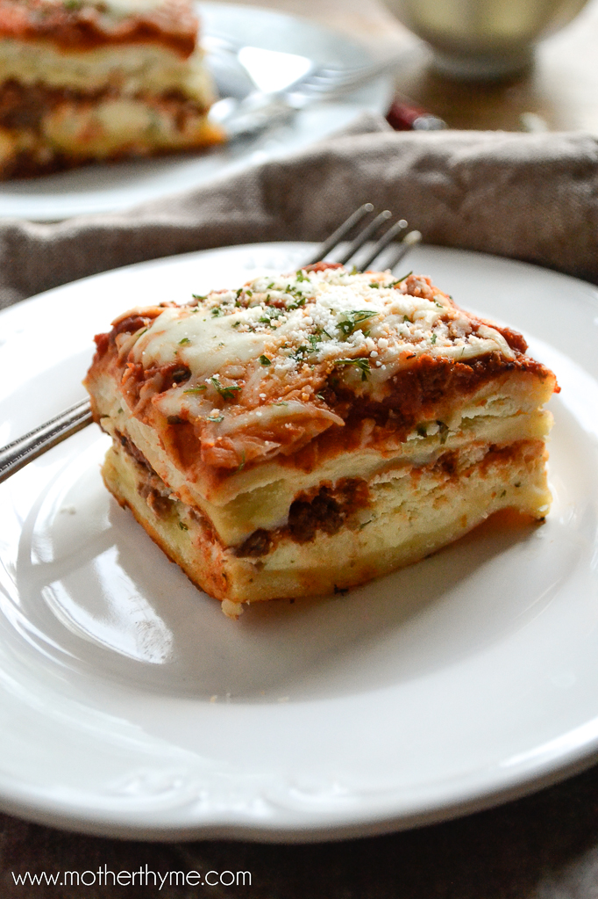

Lasagna
Lasagna is a type of pasta, possibly one of the oldest types, made of very wide, flat sheets.Either term can also refer to an Italian dish made of stacked layers of lasagna alternating with fillings such as raga, bechamel sauce, vegetables, cheeses, and seasonings and spices.
Ingredients
- cooking spray
- 1 ½ large zucchinis, thinly sliced lengthwise
- 1 tablespoon olive oil
- 1 pound ground beef
- 1 ½ cups low-carb marinara sauce
- 2 teaspoons salt, divided
- 1 teaspoon dried oregano
- ½ teaspoon ground black pepper
- 1 (8 ounce) container ricotta cheese
- 1 large egg
- ½ teaspoon ground nutmeg
- 2 cups shredded mozzarella cheese
- ¼ cup grated Parmesan cheese
- aluminum foil
Steps
- Preheat the oven to 375 degrees F (190 degrees C). Grease an 8-inch baking dish with cooking spray.
- Pat dry zucchini slices with a paper towel to remove excess moisture. Set aside.
- Heat olive oil in a saucepan over medium-high heat. Add ground beef; cook until browned, 5 to 8 minutes.
- Add marinara sauce, 1 teaspoon salt, oregano, and pepper; simmer for 10 minutes. Set aside.
- Combine ricotta cheese, egg, 1 teaspoon salt, and nutmeg in a bowl; mix well. Set aside.
- Arrange one layer of zucchini slices in the prepared baking dish. Cover with 1/2 of the sauce. Add another layer of zucchini slices. Spread ricotta mixture on top. Sprinkle with 1/2 of the mozzarella cheese. Add another layer of zucchini slices; cover with remaining sauce and top with remaining mozzarella cheese and Parmesan cheese. Cover the baking dish with aluminum foil.
- Bake in the preheated oven for 30 minutes. Remove aluminum foil and bake until top is golden, about 15 minutes more.